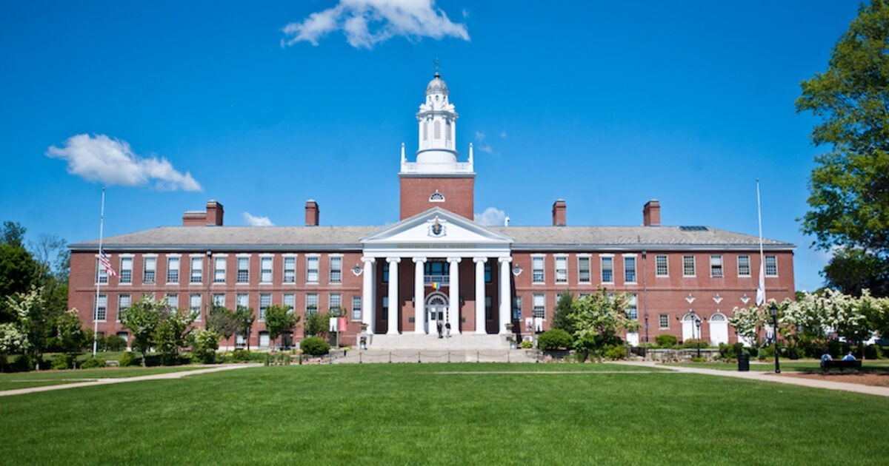
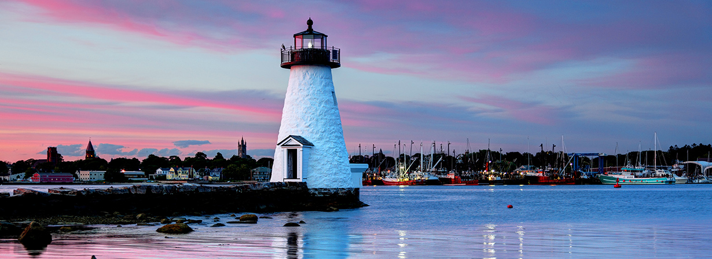

My name is Mason and I am a Junior attending Bridgewater State University.

My major is Computer Science and I am currently working towards a Bachelor's Degree. With potentially persuing a Master's Degree in the future. My long term goal is to become a Quantitative Analyst or a Quantitative Developer.

I am from New Bedford and I am the youngest of four children. With my oldest brother attending Bridgewater State University a few years prior. New bedford is a 30 minute drive from Bridgewater. This makes it convinent for people living in New bedford to commute to Bridgewater. It is also known for its rich history with fishing and whaling communities.I enjoy playing video games with my friends and I also like to go snowboarding in the winter time. While snowboarding the biggest mountain I have skied is Mount Sunapee in New Hampshire. It took about 20 minutes to snowboard down the mountain. My most played game is either Overwatch or Valorant.
I currently work at Bestbuy located in North Dartmouth. I have been working there for a little over a year. Recently I learned a lot more about appliances such as refrigerators and ranges with my biggest appliance sale being over $7,000. This made it so the most I sold in a day was over $15,000.